ユーザーに向けたデザインの方向性を指す
インターフェーズは略すと「境界面、接点」になります
ユーザーと物の窓口の用の様なもので
デザイン上で見られすべての情報がUIに当たります
優れたUIデザインとは「見やすさ」「使いやすさ」「分りやすさ」など如何にユーザにストレスなく使えるかになります
エクスペリエンスは略すと「体験、経験」になります
デザインを通してユーザーが体験する全ての事を指します
優れたUXデザインとはユーザに良質な体験を与え興味を引けるものになります
デザインをする上での4原則
要素をただ整列させるだけですが、それだけで情報が最も伝わりやすくります。 几帳面な印象をあたえクオリティの高さをアピールでき、整列させた要素の余白を詰める事によってストーリー性を演出できたり 逆に余白をゆったり取ることによって高級感を出せます
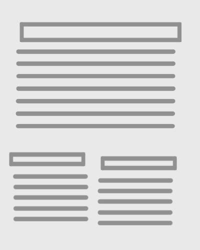
悪い例
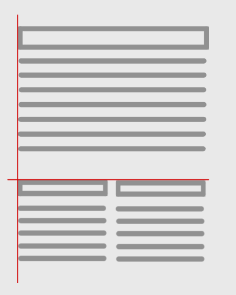
良い例
関係性の近い各要素の距離を近づけて配置することで位置的にそれらが関係があるものと認識され、見ている人に理解されやすいデザイン・レイアウトを作ることができます。近接を上手く活用したいときに気を付けたいポイントが余白で、何となくで余白をつけるのではなく関係性があるものとそうでないものでそれぞれ異なる余白にすることです。
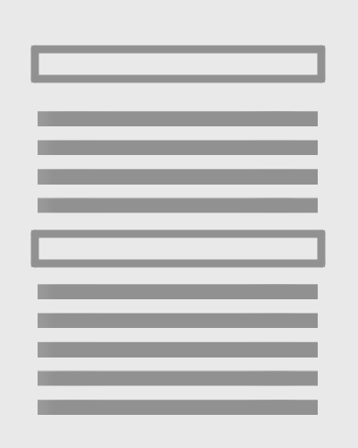
悪い例
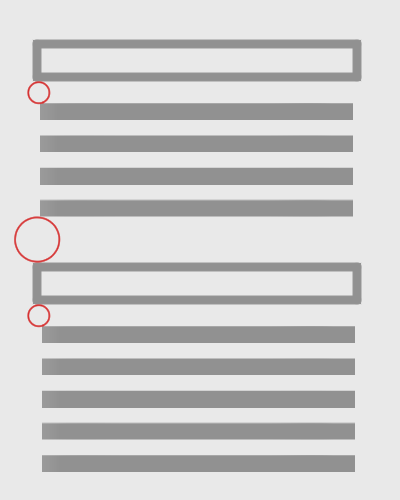
良い例
同じ要素を繰り返して配置する事で、一貫性を持たすことができます。またでデザインにリズムが生まれ見てる人に心地よさを与え好意的な意識を醸成します。例えばWEBサイト等でもヘッダーやフッターを統一させたり見出しや装飾を繰り返して使用することが多いですが、これらも反復のルールに則ったものです。ただし、場合によっては使いすぎることでくどくなりすぎることもあるので、とにかく繰り返せばいいということではなく全体のバランスは考えるべきです。
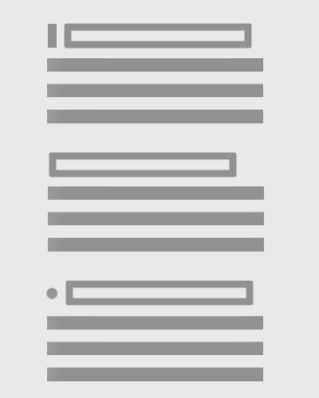
悪い例
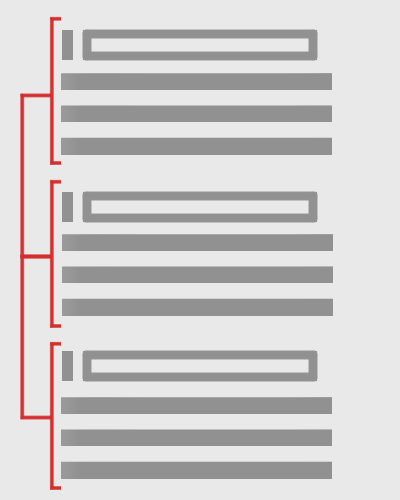
良い例
何をどのように対比させるのがデザインのポイントです。文字ならカラー・サイズ・ウェイトを変える、装飾なら背景色のトーンを変える等、各要素の違いをハッキリさせることでデザイン全体にメリハリを付け、上手く活用すれば内容的には同じでも単純にデザインされたものよりも人を惹きつけるデザインにすることができます。
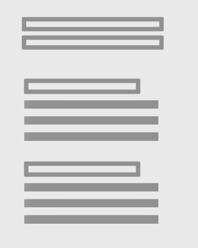
悪い例
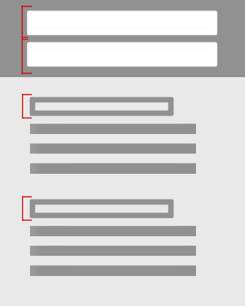
良い例
レイアウトの参考例と効果
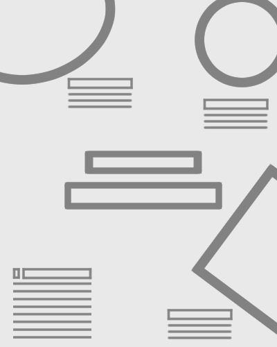
画角の外側へ広がりを作り出すことによって、画角よりもっと大きな世界を想像させる。拡散レイアウトのポイントははみ出した部分を想像させることです。
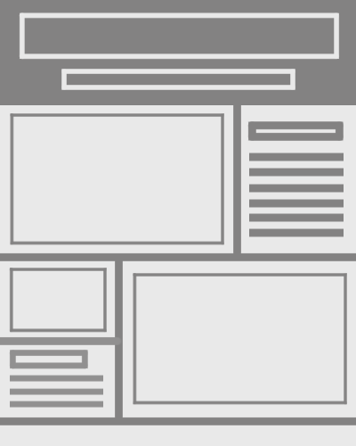
分割することで情報を整理できます。要素の大きさで内容の優劣をつけれるため整理されたデザインを作り出せます。グリットデザインは単調で堅苦しいイメージになることもありますが比率は配色でお洒落にもなります。
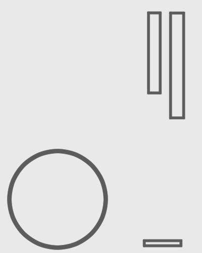
何もない部分が多くを語ります。余白が生み出す余韻と余裕がストーリーや高級感を生み出すので最も大切な要素の周りに余白を配置すると、伝えたい情報に視線を誘導できるので効果的なデザインを生み出せます。
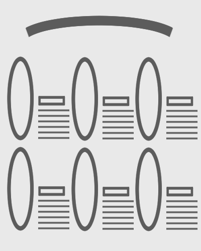
均等の分割し要素を配置する事で、秩序が生まれ美しいレイアウトになります。ただし動きが少なくなるため、単調な印象になってしますので、フォントなどでアクセントをつけて、単調さを回避するとより良いデザインになります
よく見かける形にも人に与える印象に作用します
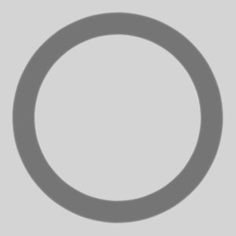
イメージ：優しさ、柔軟性、温かみ、回転
子供も向けデザインや病院などの固い、怖い等のイメージを和らげるアクセントになる
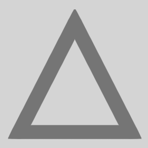
イメージ：攻撃性、先進的、スマート
鋭利な角がある三角は攻撃的である反面スマートで洗練された印象になります
イメージ：安定、安心、規律、真面目
四つの角から整列もさせやすく、まとまりや規律をイメージしやすい。日常的にも目になじんでるので安心を生む。
文字をレイアウトすることを指します
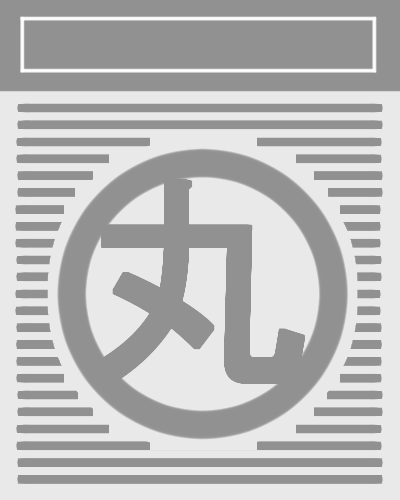
要素の輪郭をテキストで形どる事によって要素を強調できる
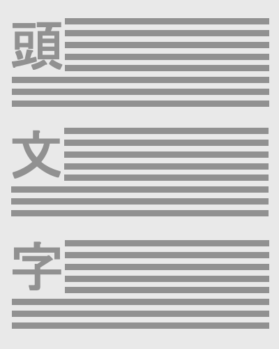
テキストの一文字目を大きくすることを指す。誘視性を高める効果がある。また固い文書のあしらいにも使いやすい
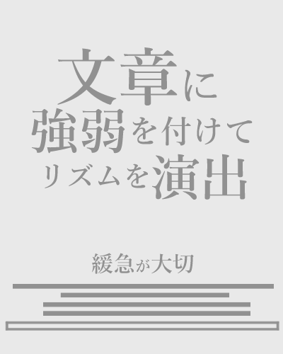
単語や動詞にフォントで緩急をつける事によって、リズムを生み出す。
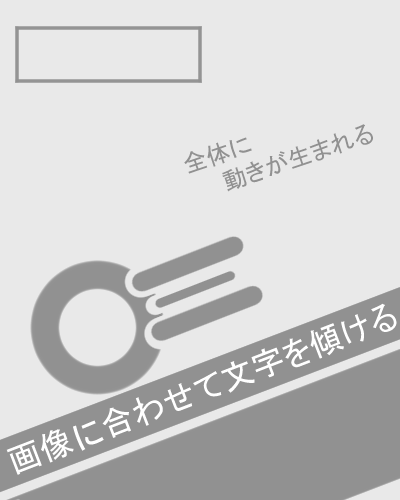
傾けた要素に対してテキストも合わせることによってデザインに動きがでる
よりデザインを効果的に見せるために使える心理学
人には「他人の行動を見て自分の行動を決める」という原理があり、これを社会的証明効果といいます。 この心理効果でデザインに使いやすい具体例には視線です。人間は誰かが何かを見つめているとその目線の先に何があるのか確認したくなる性質があります。 ランディングページのファーストビューで人物写真を使うとき 人物の視線の先に購入ボタンや大事なキャッチコピーを設置し、誘導させるといった活用ができます。
一般的には、何も存在しないスペースを「ホワイトスペース」と呼んでいます。 「ホワイト」といいますが、真っ白でなくても赤や青などの色がついていても空白、何もない異空間であれば「ホワイトスペース」と呼びます。 ホワイトスペースには、目立たせたいポイントを強調したり、伝えたいテキストの背景色っきりと見せる効果があります。 レイアウトの余白がこれに当たります
予想に反した表現で強いインパクトを与えることをサプライズ効果といいます。 人間の心理として、色や形に見慣れてしまうと、内容に関わらず無意識にスルーしてしまう傾向にあります。 目立ってほしいところに使にポイントを絞って使うことで、見てほしい部分を確実に見てもらうことができます。 ランディングページの多くで、サイトのメインカラーの補色を購入ボタンに使っているのも、サプライズ効果を演出するためです。 ４原則の反復を応用して目立たせたい要素にサプライズ効果を持たせると有効的です
無意識のうちに囲まれている物の中心に目が行く作用をトンネル効果といい、デザインに活用することで訪問者の目線をコントロールすることができます。 一番強調したい部分、目線を移動してもらいたい部分がある場合、その周囲を囲ったデザインにすることで、自然と注意を惹くことができます。
ベビーフェイス効果とは、赤ちゃんのような丸顔・小さな鼻・大きな目・短いアゴといった特徴を持つ人物・物を見ると、可愛らしさや純粋無垢なイメージを抱くという性質のことです。 安心感を持ってもらいたい時などにはベビーフェイス効果を利用し、これらの特徴を持った人物の画像を使うと有効です。 逆に、専門的・威厳なイメージを伝えたいときには大人の男性の画像を選択するとイメージをコントロールすることができます。
提供された情報に同一性が無く干渉し合うと、印象がちぐはぐになり理解が困難になったり、妨げになってしまうというものです。 画像と文章をセットで使う時には、 ユーザーを混乱させないためにもイメージを統一することが重要です。 例えば蛇口の色があったとして、赤がお湯、青が水という認識はほとんど世界共通であるため、色を逆にしただけでも多くの人は混乱し、「使いづらい」という印象を受けます
歪みのない対称の物に対して、安定感や美しさ、誠実といったイメージを受ける効果のことをシンメトリー効果と呼びます シンメトリーは左右だけでなく、上下対称や斜め対称も含まれます。 意識的に取り入れることで、にぎやかなデザインでも整って見えるため、見る人に好印象を与えることができます。 逆に、歪みのある非対称なものをアシンメトリーといい、人は不安感や違和感を感じます。
選択肢が増えるほど迷いが出てしまい、選びにくくなってしまうというものです。 選択肢が豊富なことは選ぶ楽しみを提供することにも繋がりますが、あまりに多いと購買意欲を減退させることにつながるので注意が必要です。 サービスの選択肢が多い、またはユーザーにとって有益な選択肢を多数提示したほうが良いと思われがちでずが 実際には、選択肢の過多効果によって、種類を増やせば増やすほど効果が下がっていくということも珍しくありません